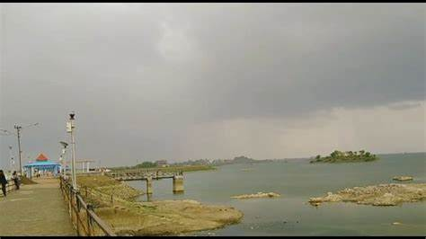

Welcome To Bhavnagar...

Gohilwad City
Bhavnagar is a city in the Bhavnagar district of the Saurashtra region of Gujarat, a state of India. It was founded in 1723 by Bhavsinhji Takhtasinhji Gohil (1703–1764). It was the capital of Bhavnagar State, which was a princely state before it was merged into the Indian Union in 1948. It is now the administrative headquarters of the Bhavnagar district.
Bhavnagar is situated 190 kilometres away from the state capital Gandhinagar and to the west of the Gulf of Khambhat. It has always been an important city for trade with many large and small scale industries along with the world's largest ship breaking yard, Alang which is located 50 kilometres away. Bhavnagar is also famous for its version of the popular Gujarati snack 'Ganthiya' and 'Jalebi'.
The Gohil Rajput of the Suryavanshi clan faced severe competition in Marwar. Around 1260 AD, they moved down to the Gujarat's coastal area and established three capitals: Sejakpur (now Ranpur), Umrala, and Sihor. Sejakpur was founded in 1194.
In 1722–1723, the forces led by Khanthaji Kadani and Maratha Pilaji Gaekwad attempted to raid Sihor but were repelled by Maharajah Bhavsinhji Gohil. After the war, Bhavsinhji realized the reason for repeated attack was the location of Sihor. In 1723, he established a new capital near Vadva village, 20 km away from Sihor, and named it Bhavnagar after himself. It was a carefully chosen strategic location because of its potential for maritime trade. Naturally, Bhavnagar became the capital of Bhavnagar State. In 1807, Bhavnagar State became a British protectorate.
Famous Places in Bhavnagar City
- Palitana Temple
- Khodiyar Temple Rajpara
- Takhteswar Temple
- Shri Vishal Jain Museum
- Shree Kashtbhanjan Dev Sarangpur Dham
- Brahma Kund
- Ganga Deri
Bhavnagar City Famous Food Item
- Fafada Jalebi
- Pav Bateka
- Lasaniya Bateka
- Bateka Bhungra
- Bhel
- Dahipuri
- Gir Gay Tea
- Bhavnagri Gathiya
- Ratlami Sev
© Copyright Reserved
Go To Main Page